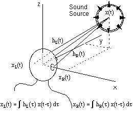
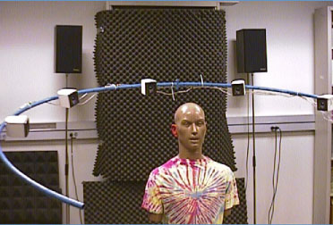
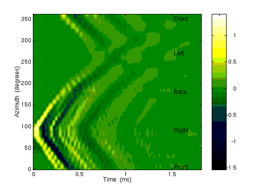

4.4. Head-Related Transfer Functions

Para encontrar la presión sonora que una señal x(t) produce en el pabellón auditivo, necesitamos la respuesta al impulso h(t) de la fuente en el pabellón auditivo. Esto se llama Head-Related Impulse Response (HRIR), y su transformada de Fourier se llama Head-Related Transfer Function (HRTF). La HRTF captura muchas cualidades que utilizamos para localizar un sonido. Una vez conocido para ambos oídos, podemos sintetizar señales binaurales a partir de una señal monoaural.
Esta función es complicada y depende de cuatro variables: tres espaciales y una frecuencial. Para distancias mayores de un metro, decimos que la fuente está en el campo lejano de audición y la HRTF cae con el inverso de la distancia. La mayoría de las mediciones del HRTF se hacen en el campo lejano, ya que dependen fundamentalmente del azimut, elevación y la frecuencia.
Hay varias maneras de hacer estas mediciones, la más común es usar un maniquí llamado KEMAR.

Para hacerse una idea de cómo son estas funciones, presentamos la HRIR en el plano horizontal.

El gráfico muestra la respuesta de la oreja derecha a un impulso en el plano horizontal. La fuerza de la respuesta se representa más brillante. Así vemos que llega antes cuando proviene de la derecha (azimut 90º) y es más débil cuando proviene de la izquierda (azimut 270º). El tiempo de llegada varía aproximadamente como una forma sinusoidal, lo que se aproxima a la ecuación del ITD. La diferencia entre el tiempo más corto y largo de llegada es aproximadamente 0.7 ms, tal como la teoría predice.
Podemos dar más interpretaciones de este dibujo pensando en la física que lo produce. Las secuencias iniciales de cambios rápidos (las bandas oscuras y brillantes) tienen que ver con las reflexiones. La primera reflexión es del pabellón auditivo, y la que aparece en 0.4 ms proviene del hombro.
Finalmente, podemos notar que la respuesta cuando la fuente está enfrente o detrás es muy parecida. Las diferencias surgen de una falta de simetría en la línea de los 90º. Por ejemplo, la línea oscura que sigue el primer pulso existe en la parte delantera, pero no en la trasera, debido a la reflexión del pabellón auditivo, que está adecuada para los sonidos de frente. Algunas personas tienen dificultad para distinguir si el sonido proviene de adelante o de atrás, y por eso tienen que girar la cabeza.